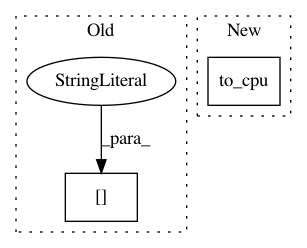

fa77503653547fbc02164c56b34f7c55cf35ee9f,chainercv/links/ssd/ssd.py,SSD,_suppress,#SSD#Any#Any#,112
Before Change
bbox_label, score_label = raw_bbox[mask], raw_score[mask, i]
if self.nms_threshold is not None:
order = score_label.argsort()[::-1]
bbox_label, score_label = bbox_label[order], score_label[order]
bbox_label, param = transforms.non_maximum_suppression(
bbox_label, self.nms_threshold, return_param=True)
score_label = score_label[param["selection"]]
After Change
bbox_label, score_label = raw_bbox[mask], raw_score[mask][:, i]
if self.nms_threshold is not None:
order = xp.array(chainer.cuda.to_cpu(
score_label).argsort()[::-1])
bbox_label, score_label = bbox_label[order], score_label[order]
bbox_label, param = transforms.non_maximum_suppression(
In pattern: SUPERPATTERN
Frequency: 3
Non-data size: 2
Instances
Project Name: chainer/chainercv
Commit Name: fa77503653547fbc02164c56b34f7c55cf35ee9f
Time: 2017-05-07
Author: Hakuyume@users.noreply.github.com
File Name: chainercv/links/ssd/ssd.py
Class Name: SSD
Method Name: _suppress
Project Name: chainer/chainercv
Commit Name: 5b36f836715758d83733531ad2253775b476a764
Time: 2017-05-08
Author: Hakuyume@users.noreply.github.com
File Name: chainercv/links/ssd/ssd.py
Class Name: SSD
Method Name: _suppress
Project Name: chainer/chainercv
Commit Name: d37d08d9b2a806b3345fba41711c0d517b92a65c
Time: 2017-06-15
Author: yuyuniitani@gmail.com
File Name: chainercv/links/model/vgg/vgg16.py
Class Name: VGG16Layers
Method Name: predict